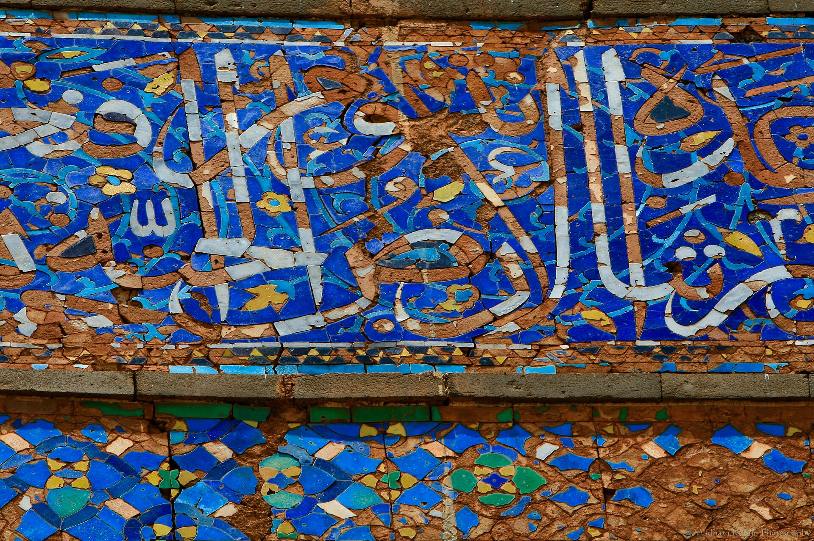
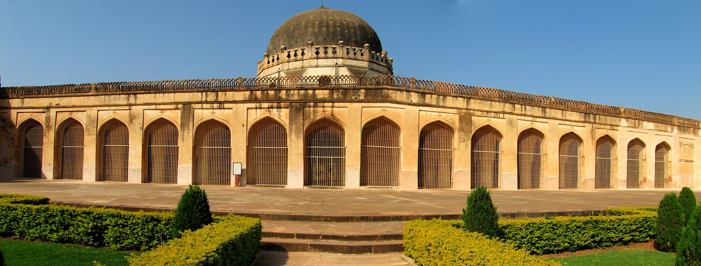
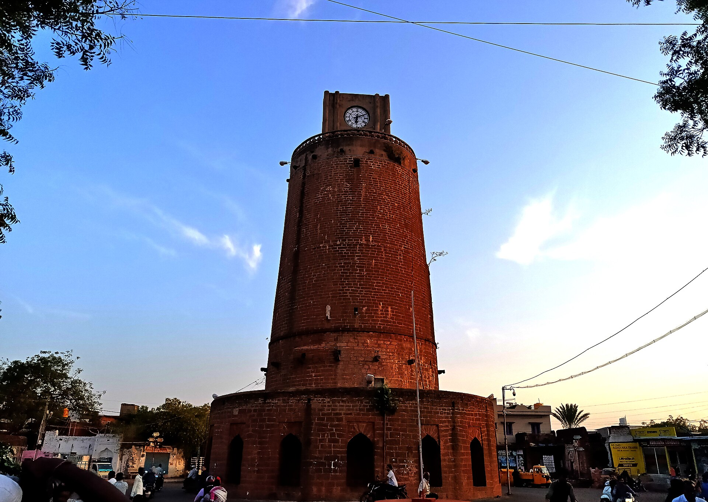
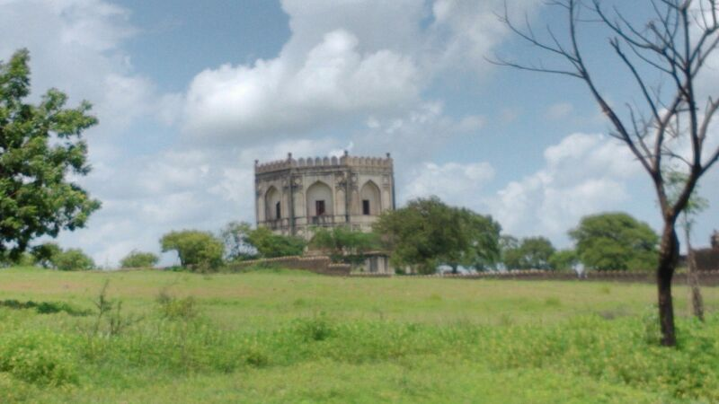
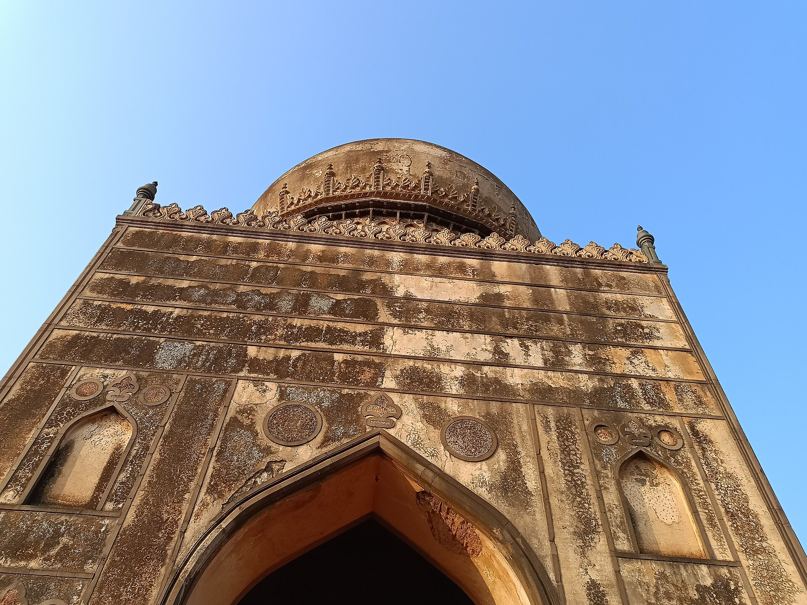

Bidar Fort
1429–32
Thirty-seven bastions on two and a half kilometres of wall, behind a triple moat cut into solid laterite with causeways of untouched rock left standing between the channels.
4 · Muhammadabad — the plateau capital
Bahmani capital 1432 – 1518 · Barid Shahi to 1619
Bidar is where the Bahmani sultanate was most itself: Persian tile on Deccan laterite, a college with three thousand manuscripts, water brought miles underground, and a minister so incorruptible that his enemies had to forge his signature to kill him. It is also where the sultanate came apart.
Ahmad Shah's builders had laterite to work with, and they used it as the Yadavas had used basalt: not by piling stone on stone but by removing it. Bidar's defence on the south and south-west is a triple moat hewn into the living rock, with causeways of untouched laterite left standing between the channels.
Above it run about two and a half kilometres of wall, thirty-seven bastions built for the welded-bar cannon of the period, and seven gates including the domed Gumbad Darwaza and the Sharza Darwaza with its lions. Inside are more than thirty buildings: the Solah Khamba mosque of 1423–24, its façade of nineteen uniform arches making it the oldest large mosque in southern India; the Takht Mahal, where the turquoise throne stood; the Diwan-i-Aam; and, beneath the palace, the Hazar Kothari — an underground hall with a tunnel running towards the outer wall, the royal way out.
The most beautiful room is later. The Rangin Mahal, remodelled by Ali Barid Shah in the sixteenth century, sets mother-of-pearl flowers into jet-black basalt, under carved teak ceilings and coloured tile — the Deccan's most concentrated piece of interior decoration.
The plateau has no river. Bidar solved it with the karez — the Persian qanat: gently graded tunnels driven through water-bearing laterite from a mother well far outside the town, ventilated and cleaned through vertical shafts sunk at intervals along the line, delivering water into the city entirely by gravity.
The Naubad line runs about two kilometres with twenty-one recorded shafts; a parallel line at Aliabad has twenty-nine wells at fifty-metre spacing. They were derelict for decades. Between 2016 and 2018 the Naubad karez was cleared and restored for roughly fifty thousand dollars — and in the drought of 2017 it flowed again.
This is the same technology, arriving with the same Persian émigrés, that Malik Ambar would later use to water Aurangabad and the Adil Shahis to water Bijapur. Follow the water and you can trace the migration.
He came from Gawan in Gilan on the Caspian, of a family of ministers, exiled by faction; studied at Cairo and Damascus; traded horses across Anatolia, Iran and Egypt; declined offices in Khurasan and Iraq; and landed at Dabhol in 1453 as a merchant, aged forty-two. He was given a command of a thousand horse, and within five years was chief minister.
He reformed the state against its own nobility: he split the four provinces into eight and deliberately alternated Deccani and foreign-born governors; he had land measured and assessed at fixed rates; he paid troops in cash from the treasury against a registered muster roll instead of through their governors; and he stripped each governor of all but one fort. Every one of these took power from the men who eventually killed him.
He took Goa from Vijayanagara in February 1472, opening the sultanate's best window on the Indian Ocean and cutting the piracy that preyed on Hajj pilgrims. Returning in triumph, he distributed his jewels and property to scholars and Sayyids, kept only his horses, elephants and his library, and afterwards walked the city in disguise on Fridays handing out coins, telling the poor they came from the sultan.
The same year he finished his madrasa.
| Founded / completed | 1460 / 1472 |
| Footprint | About 62 × 55 m, three storeys around a court |
| Halls | Three great lecture halls, each roughly 8 × 16 m |
| Library | About 3,000 manuscripts |
| Minarets | Two, over 30 m — one still stands |
| Façade | Persian glazed tile in green, yellow and white |
| Ruined | 1695–96 — a powder store inside it was struck by lightning |
The Bahmani nobility split over who counted as a native. On one side the Deccanis, Deccan-born Muslims, largely Sunni, allied with the Habshis — the African military households. On the other the Afaqis, 'men of the horizon': Persians, Turks and Arabs who kept arriving by sea, often Shia, recruited for cavalry expertise and Persian administration, and promoted fast.
They quarrelled over land assignments, cavalry commands and access to the king, and the sectarian difference sharpened all of it. In 1446 Deccani nobles and their Habshi troops invited the Afaqis to a banquet at Chakan fort and massacred them — the figures given run to 1,200 Sayyids and a thousand others.
Mahmud Gawan's eight-province reform was an attempt to engineer parity between the two. His murder proved it had failed.
His enemies could not defeat him, so they forged him. An Abyssinian slave who had charge of the minister's seals was made drunk and induced to stamp a blank sheet. Above the seal they wrote a letter to the Raja of Orissa inviting an invasion and promising to join it.
Sultan Muhammad Shah III, drunk himself, read it and sent for the old man. Warned, and offered ten thousand horse to escape with, Mahmud Gawan refused: this beard, he said, had grown white in the service of the father, and it would be honourable if it were dyed with his blood by the fortunes of the son.
Shown the letter, he said the seal was his and the letter was not. The sultan rose and had him killed on the spot. His last words to the king were a prophecy — that the death of an old man was of little moment to himself, but to the king it would prove the ruin of an empire. He was seventy. His estate was found to contain a prayer mat, his books, and a few coins.
The sultan learned the truth, drank himself into fits in which he cried that Mahmud Gawan was tearing him to pieces, and died within the year, aged twenty-eight.
Ferishta gives a chronogram for the sultan's death: a phrase whose letters, added up in the abjad system, yield the year. The value AH 886 is well attested.
The phrase itself is usually rendered in English as the ruin of the Deccan. That wording circulates widely in the secondary literature without a verifiable primary citation, so it belongs to tradition rather than to the record — which is a pity, because as prophecy it was exact.
Within eleven years of the murder the sultanate had fragmented into five kingdoms.
Bidar's other export is a metal. A zinc-copper alloy — the working ratio usually given as sixteen parts zinc to one of copper — is cast, filed smooth, darkened so the design can be drawn on it, chiselled, and inlaid with hammered pure silver.
The last step is the strange one. The piece is boiled in a paste of soil taken from inside Bidar fort with ammonium chloride. That earth, sheltered from sun and rain for six centuries, is exceptionally high in nitrates; it turns the alloy permanently matt black while leaving the silver brilliant. Craftsmen test a patch of soil by tasting it, and insist no other earth works as well — which is half metallurgy and half guild boundary.
Tradition credits its introduction to an Iranian craftsman invited by Ahmad Shah Wali. It holds a Geographical Indication tag, and the trade is in steep decline.
Bidar believes passages run from the fort to the tombs at Ashtur, to the Chaubara in the middle of town, and even to Gulbarga, with Bahmani treasure at the end of them.
The substrate is real and impressive: the Hazar Kothari's underground hall and escape tunnel, the Mandu Darwaza sallyport, and dozens of kilometres of karez running under the town. When a place is genuinely honeycombed, the legends write themselves.
“I am old and do not mind my death… I thank God that He gave me an opportunity to lay down my life in the cause of the dynasty.”Mahmud Gawan, 5 April 1481
The fort holds the north-west lip of the plateau; the walled town runs south-east of it with the Chaubara at its crossroads; the royal dead lie out at Ashtur to the east and the Barid Shahis to the west.
1429–32
Thirty-seven bastions on two and a half kilometres of wall, behind a triple moat cut into solid laterite with causeways of untouched rock left standing between the channels.

remodelled 1542–80
Mother-of-pearl flowers set into jet-black basalt, under carved teak ceilings and coloured tile. The most concentrated piece of interior decoration in the Deccan.

1423–24
Nineteen uniform arches across the façade of the oldest large mosque in southern India — built before the capital had even formally moved here.
15th c.
The throne hall, where the turquoise-blue throne of ebony and gold stood — the one taken from Warangal in 1364, to which every Bahmani sultan added a jewel.

1460–72
Three storeys of Timurid blue tile around a court, with three thousand manuscripts and free lodging for students. A powder store inside it was struck by lightning in 1696 and took away half the building.

early 15th c.
A cylindrical watchtower twenty-two metres high with eighty winding steps, standing at the crossing of the old town's two main streets — the exact centre of Bidar.

1436–1535
Twelve great domes in an open field, eight of them sultans'. Ahmad Shah Wali's is the only Bahmani interior with its painting intact — gold, lapis and vermilion, with Kufic bands, said to be by Persian painters.

mid-15th c.
The octagonal tomb of Khalilullah, the sultan's spiritual master, on a rise a kilometre west of Ashtur — the saint placed between the king and his ancestors.

16th c.
Ali Barid Shah's tomb has no walls at all: a twenty-five-metre dome floating on four open arches at the centre of a formal charbagh — the earliest fully realised garden tomb in the Deccan.
15th c.
Two kilometres of gently graded tunnel with twenty-one shafts, bringing water through the laterite by gravity alone. Restored between 2016 and 2018, and flowing again in the 2017 drought.